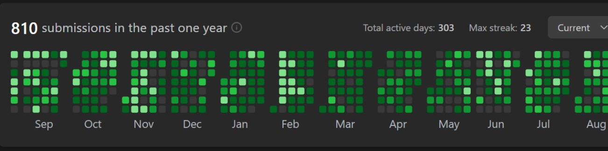

GenAI Developer / Backend Engineer / RAG Builder
Building dependable AI products, agentic workflows, and backend systems that hold up in production.
I am Shreyansh Sokal, a GenAI Engineer at Capgemini with hands-on experience across LLM applications, Azure OpenAI-powered RAG systems, Java backend engineering, and distributed architecture.
About
Engineering-first AI work
My work sits at the intersection of applied GenAI and strong software engineering. I build LLM-powered workflows that are not just impressive in demos, but reliable in real business settings.
Across Python, FastAPI, Java, Spring Boot, SQL, and Redis, I care about system design, retrieval quality, API clarity, and shipping tools that reduce manual effort for teams.
Core strengths
Experience
Enterprise delivery across GenAI and backend systems
GenAI Developer / Client: Burberry
Delivered an AI-driven code change impact analyser for SAP ecosystems spanning FI, MM, and SD modules.
- Built LLM-based parsers for ABAP code, transport requests, and configuration artifacts.
- Implemented a RAG pipeline on Azure OpenAI using technical specs, functional docs, and incident history.
- Automated impact reports that linked code changes to transactions, tables, and business KPIs.
Java Backend Developer / IBM Sterling OMS
Improved ecommerce order management flows through backend enhancements, REST APIs, and automation support.
- Developed Java-based improvements to OMS document pipelines for better performance and data flow.
- Designed custom automation agents for sourcing, scheduling, and process automation.
- Created SQL-backed reporting and analytics for operational insights across distributed systems.
Achievements
Recognition backed by delivery
Customer Delight Award
Recognized for exceptional project performance at Capgemini.
Rising Star Award
Received multiple appreciations from leadership and clients.
Rapid growth
Promoted twice in 2.5 years for consistent impact.
Education
Computer Science foundation
B.Tech in Computer Science
Rajiv Gandhi Proudyogiki Vishwavidyalaya, Bhopal
2018 - 2022 / CGPA: 8.74
Coursework: OOPs, DBMS, Data Structures & Algorithms, Artificial Intelligence, Machine Learning, Backend Development, Cloud Computing, System Design, Operating Systems, Networking.
Problem Solving
Consistent DSA practice on LeetCode
1 Year Consistency
Problem solving built through daily repetition
Alongside my backend and GenAI work, I have stayed consistent with Data Structures and Algorithms practice on LeetCode. This reflects the discipline I bring to problem decomposition, optimization, and writing reliable production logic.
810
submissions in the past year
303
total active days
23
max streak
LeetCode Activity
Consistency in DSA and problem solving

Projects
Applied AI and scalable platform work
AI + Data
AI-Powered OMS NL-to-SQL Chatbot
Built a natural-language OMS assistant that translates user questions into SQL, executes them, and returns formatted business-friendly answers.
- Supports PDF invoice upload with AI extraction and validation.
- Includes normalization and error-correction pipelines before database insertion.
- Improves data accessibility for non-technical inventory and operations users.
Python, Flask, JavaScript, HTML, CSS, SQL, NLP/AI
Backend + Scale
Tiny URL Application
Designed a scalable URL-shortening backend with performance, safety, and reliability features baked into the core flow.
- Improved redirect performance by around 35% using Redis caching.
- Added malicious URL detection and safe or suspicious status tagging.
- Applied validation, rate limiting, and ML-based classification without hurting latency.
Java, Spring Boot, MySQL, Hibernate, Redis, REST APIs, ML
Skills
Tools I use to ship
Programming & App Development
Python, FastAPI, Flask, SQL, Java, Spring Boot, Spring MVC, Hibernate/JPA, Microservices, RESTful APIs, JUnit, Maven, Postman
AI & GenAI
Generative AI, LLMs, GitHub Copilot, RAG Pipelines, Prompt Engineering, Agentic AI, LangChain, LangGraph, GPT Models, Gemini, Hugging Face, Finetuning
NLP & Retrieval
Transformers, Azure AI Search, Pinecone, vector retrieval, prompt tuning, instruction optimization
Databases & Practices
MySQL, Redis, CI/CD, Git, GitHub, Agile, SDLC, sprint planning, code reviews, logging, monitoring, DSA
Contact
Let's build something useful with AI
If you are hiring for GenAI, backend engineering, or intelligent workflow automation, I would love to connect.